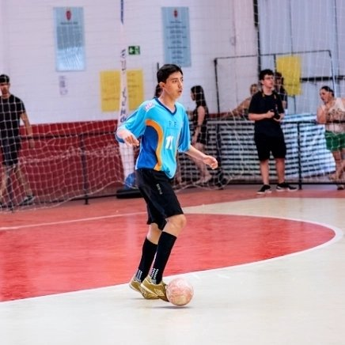

Nasci em 25 de Abril de 2008 na cidade de Itapetininga.
Minha família é composta por minha mãe Daniela meu pai João e mimha irmã Milena.
Gosto muito de jogar futebol inlusive jogos em dois times em minha cidade, pela minha escola o SESI onde estudo desde 2014 estou completando o meu segundo ano do ensino médio e cursando no Senai Desenvolvimento de Sistemas.
Curto também jogar videogame, sair com os amigos, ir à igreja e comer lanche, pizza entre outras coisas.
Falando um pouco de minhas conquistas ganhei alguns campeonatos principalmente de futsal esporte que eu mais pratico, 3 copa skill, 2 copa sesi, 3 campeonatos de corrida do Venâncio, medalha da OBA e mobfog e alguns outros troféus. 